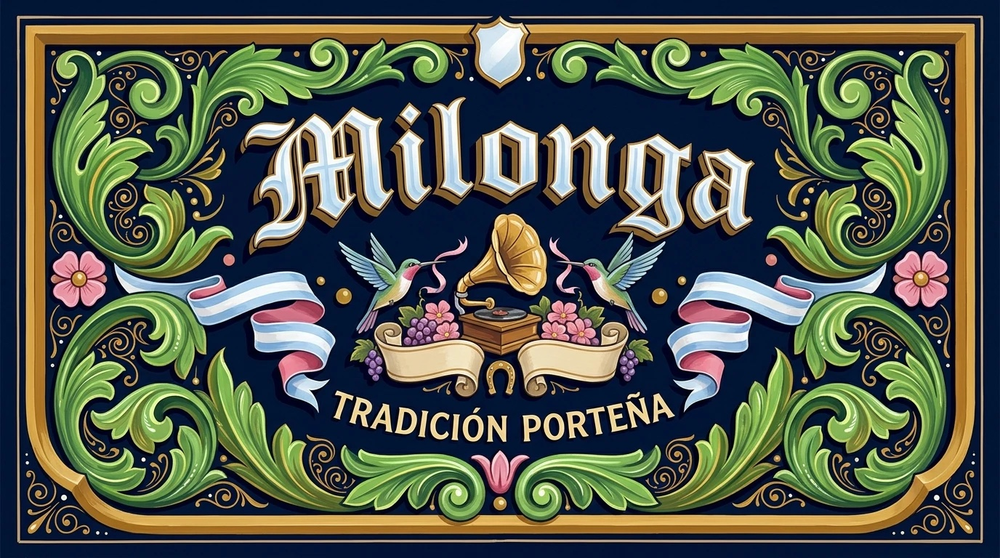
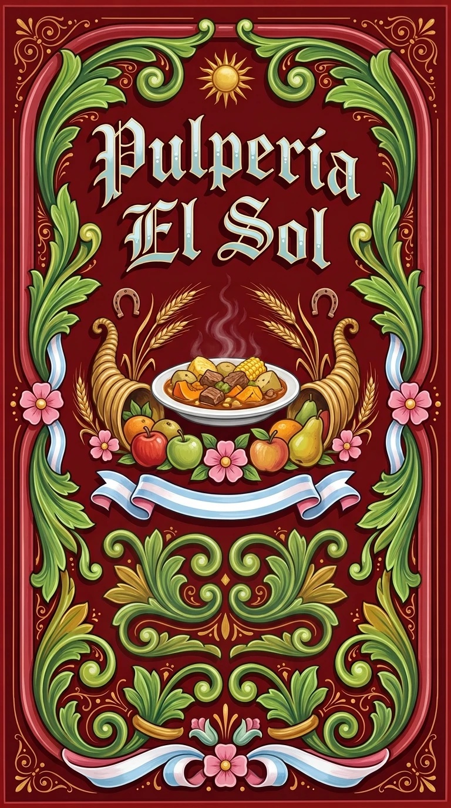

Type Posters · AI image style prompt
Filete Porteño
Buenos Aires fileteado panels: symmetrical acanthus scrolls, glossy hand-painted enamel and gothic fish-tail lettering on navy, white or red.


What this style does
Buenos Aires fileteado porteño translated into a modern poster and label system: a symmetrical, fully enclosed panel of glossy hand-painted enamel ornament on a dark contra-field, built from acanthus leaves ending in volutes, a thick modeled band, flat flowers, ribbons, dots and thin firulete lines, with gothic fish-tail lettering that has a projected body, cast shadow and white highlight strokes. It reads like a painted bus panel or shop-front sign, while subject, words and field color change completely each time.
Signature traits
- The whole composition sits inside a clearly painted frame, with a deliberate margin (the talon) between frame and ornament, so it reads as a self-contained panel rather than a poster with free-floating decoration.
- Near-obsessive symmetry: the left and right halves mirror each other around a central axis, or follow a strict asymmetric balance with the heavier mass on the left and the band completing the right.
- The panel is filled evenly from top to bottom: headline, emblem and supporting line are spaced across the full height, and no empty field larger than about one seventh of the panel height is left; extra filigree, flowers, a cartouche or a second ribbon fill any remaining gap.
- A thick banda with visible volume runs along the border and, together with acanthus leaves, structures the entire layout; a much thinner firulete line accompanies the band at an even distance.
- Acanthus leaves that end in volutes are the main ornament; each leaf differs slightly in shape or direction, ribs are marked with a brighter tone, and smaller dense spirals (filigree) fill gaps.
- The central emblem object is painted in the same style as the ornament, with flat base colors, a light side, a shade side and brush highlights, and a painted outline; it is never a photorealistic render, a 3D model or a stock photo.
style.json
{
"style_name": "Filete Porteño",
"style_slug": "filete-porteno",
"style_version": "1.0.0",
"style_summary": "Buenos Aires fileteado porteño translated into a modern poster and label system: a symmetrical, fully enclosed panel of glossy hand-painted enamel ornament on a dark contra-field, built from acanthus leaves ending in volutes, a thick modeled band, flat flowers, ribbons, dots and thin firulete lines, with gothic fish-tail lettering that has a projected body, cast shadow and white highlight strokes. It reads like a painted bus panel or shop-front sign, while subject, words and field color change completely each time.",
"category": "Type Posters",
"environment_variables": {
"SUBJECT": "central emblem or object inside the panel (instrument, product, animal, building) that the ornament frames",
"SUBJECT_ACTION": "how the emblem is presented: held by a ribbon, flanked by mirrored dragons or birds, rising from a cornucopia",
"PRODUCT_OR_PROP": "secondary ornamental props: flowers, fruit, horseshoe, bunting, cornucopia, scroll cartouche",
"LOCATION": "painted surface the panel sits on: bus side, shop sign, label, wooden board, enamel plaque",
"BACKGROUND_ELEMENTS": "filigree spirals, dots and drops filling the empty corners of the panel",
"MAIN_TEXT": "exact short phrase or name painted in large gothic fileteado lettering",
"SECONDARY_TEXT": "exact small supporting line painted in a simple signwriter script",
"ACCENT_SYMBOL": "small symbolic motif such as a heart, star, horseshoe or shield placed on the central axis",
"WARDROBE_STYLE": "surface finish and detailing: gold outline, pearl beads on the letters, visible brush streaks, hand-painted enamel on wood, metal or glass",
"FIELD_COLOR": "dominant contra-field color behind the ornament as a name plus hex code: usually white or ivory (#F6F1E4) or dark navy blue (#0B1B3A); deep red (#7A1620) or black (#0A0A0A) are also possible",
"STYLE_FIDELITY_ANCHORS": "Runtime ordered CORE and FLEX style anchors",
"SOURCE_CONTENT_TO_AVOID": "Runtime source identities and content to replace"
},
"style_fidelity_anchors": [
"[CORE] The whole composition sits inside a clearly painted frame, with a deliberate margin (the talon) between frame and ornament, so it reads as a self-contained panel rather than a poster with free-floating decoration.",
"[CORE] Near-obsessive symmetry: the left and right halves mirror each other around a central axis, or follow a strict asymmetric balance with the heavier mass on the left and the band completing the right.",
"[CORE] The panel is filled evenly from top to bottom: headline, emblem and supporting line are spaced across the full height, and no empty field larger than about one seventh of the panel height is left; extra filigree, flowers, a cartouche or a second ribbon fill any remaining gap.",
"[CORE] A thick banda with visible volume runs along the border and, together with acanthus leaves, structures the entire layout; a much thinner firulete line accompanies the band at an even distance.",
"[CORE] Acanthus leaves that end in volutes are the main ornament; each leaf differs slightly in shape or direction, ribs are marked with a brighter tone, and smaller dense spirals (filigree) fill gaps.",
"[CORE] The central emblem object is painted in the same style as the ornament, with flat base colors, a light side, a shade side and brush highlights, and a painted outline; it is never a photorealistic render, a 3D model or a stock photo.",
"[CORE] Every motif has painted volume: a flat base color first, then a light tone on the side facing the light, a dark tone on the opposite side, and short parallel repique brush strokes plus pure-white highlight strokes along ribs and bevels.",
"[CORE] Light comes from above or the upper left; each motif casts a hard, flat shadow onto the contra-field on the lower right.",
"[CORE] Saturated enamel colors on a white or ivory (#F6F1E4) contra-field, or on a dark navy blue (#0B1B3A) one: luminous green (#6CC24A), ochre or gold (#D9A441), pink (#F2A6C1), light blue (#A9D6F5) and pure white (#FFFFFF), with strong contrast.",
"[CORE] The work must look painted by a human hand with a brush: lines swell and taper with brush pressure, outlines vary slightly in width, small wobbles and tiny overlaps are visible, and color fills show faint bristle streaks and slightly uneven opacity.",
"[CORE] Real paint texture: raised enamel ridges at the edges of strokes, small paint pooling in corners, a few brush hairs or tiny pinholes, and a semi-gloss varnished sheen with soft uneven reflections, never a perfect digital gradient.",
"[CORE] Ribbons are two-tone: the outer face is light blue or white with blue shading, and the reverse side visible at the folds is pink to rose; folds are shaded and highlighted like folded paper.",
"[CORE] Lettering uses gothic or highly ornamented fileteado capitals with fish-tail terminals, a projected body toward the lower left, a cast shadow to the right, a bevel highlight and optional pearl beads or an inner color band.",
"[FLEX] Flat flowers are built from a circle divided into four or five equal concave petals with a small gap between them, an inner shadow and a convex center with white stamens; tulip and bell-shaped flowers may be added.",
"[FLEX] Ribbons in folded perspective, small round dots (bolitas) and teardrops fill empty spaces and corners; the composition is rich and almost overfull, never sparse.",
"[FLEX] Optional animal or symbolic figures integrated into the leaves: dragons for strength, birds, horses, or a cornucopia overflowing with flowers and fruit.",
"[FLEX] Optional long pinstripe lines and bracket-like curls (bigoteado) painted with a long-haired brush along edges and dividing color planes."
],
"source_content_to_avoid": [
"Do not copy any specific artist's finished design, signature, workshop mark or the exact panels, plates and layouts shown in the reference books.",
"Do not reproduce book pages, diagrams, step-by-step drawing exercises, captions or any printed text from the references.",
"No real company logos, brand names, bus line numbers, license plates, football club crests or political symbols.",
"No misspelled or invented words: only the exact supplied MAIN_TEXT and SECONDARY_TEXT may appear as lettering.",
"Do not use the Argentine flag as a literal national flag; light blue and white ribbons are allowed only as decorative bands.",
"No watermarks, QR codes, handles, platform interface or photograph borders."
],
"visual_deconstruction": {
"overall_style_category": "Argentine decorative enamel painting (fileteado porteño) adapted to posters, shop signs and labels.",
"composition_logic": "A closed panel built in levels: outer frame, margin, thick band with leaves, thin firulete, inner level of lighter ornament, and a central emblem on the axis.",
"ornament_system": "Acanthus leaves with volutas, flat flowers, ribbons, filigree spirals, dots and teardrops, with optional dragons, birds or a cornucopia.",
"volume_logic": "Concave and convex reading on every form: convex parts lit on top, concave parts shaded on top and lit below, with bright repique strokes on ribs.",
"lettering": "Gothic fileteado capitals with fish-tail ends, body projected left and down, cast shadow right, bevel highlight and pearls.",
"mood": "Warm, proud, festive and handmade: neighborhood craft with a lot of polish.",
"hand_made_signs": "Visible brush pressure, tapered stroke ends, small irregularities in symmetry and line width, bristle streaks inside fills and ridges of enamel at edges."
},
"composition": {
"layout": "One enclosed panel with a painted frame and an even margin; ornament mirrored around a central vertical axis, with lettering on a ribbon, cartouche or central band.",
"hierarchy": "Central emblem and headline first, then the main acanthus and band structure, then flowers and ribbons, then filigree, dots and firulete.",
"levels": "Draw the heavier outer level first, then a lighter inner level, keeping an equal gap between them; fill the gap with the thin firulete line.",
"density": "Rich and nearly full from top to bottom; spread headline, emblem and supporting line over the full height of the panel and fill any gap with ornament, leaving only small pockets of contra-field.",
"crop_behavior": "Keep the whole frame visible inside the image with a thin margin; never crop the panel unless it is shown on a real surface such as a bus side."
},
"typography": {
"headline": "Large gothic or ornamented capital letters with fish-tail terminals, painted in a luminous color (ochre, gold, light blue or ivory), with a lighter inner band, a darker projected body toward the lower left, a hard navy cast shadow to the right, a bevel highlight and optional pearl beads.",
"secondary": "Small hand-painted signwriter capitals with slightly irregular strokes, tapered ends and a thin outline in ochre, ivory or navy, set on a ribbon or cartouche; never a modern geometric sans-serif or a default font.",
"placement": "Center the headline on the axis, on a straight line or a gentle arch; the secondary line sits on a ribbon, a banner or the base of the panel.",
"spacing": "Even letter spacing with generous word gaps; every letter has the same slant and proportions.",
"rule": "Exactly the supplied words, each string appearing once, spelled correctly, with no repeated lines, extra letters, numbers or decorative pseudo-text. Never a standard serif or sans-serif font: the letters must be painted fileteado capitals."
},
"color_palette": {
"contra_field": "A saturated flat field behind everything, chosen from FIELD_COLOR: most often dark navy blue, approximately #0B1B3A, or white and ivory, approximately #F6F1E4; deep red, approximately #7A1620, or black, approximately #0A0A0A, are possible.",
"main_colors": "Luminous green, approximately #6CC24A, with darker leaf shading, approximately #2E7D32, and ochre or gold, approximately #D9A441, for the two ornament levels.",
"flowers_and_ribbons": "Pink flowers, approximately #F2A6C1, rose shading, approximately #E8739B, coral tulips, approximately #E9665A, and ribbon faces in light blue, approximately #A9D6F5, whose reverse side at the folds is pink to rose.",
"highlights": "Pure white, #FFFFFF, for stamens, teeth, pearls, repique strokes and bevel highlights; use sparingly so they glitter.",
"shadows": "Darker, saturated versions of each color, plus a hard flat cast shadow in deep navy, approximately #07122B, on the field.",
"behavior": "High saturation and contrast with painted gloss; no pastels, gradients across the whole panel, neon glow or muted film tones."
},
"image_treatment": {
"rendering_mode": "Hand-painted synthetic enamel on a rigid surface, photographed or scanned: visible brushwork, opaque outlines of varying thickness and precise brush-stroke highlights.",
"lighting": "Painted light only: top-left light side, shaded opposite side, white highlight strokes; no photographic lighting or ambient occlusion.",
"finish": "Semi-gloss varnish with soft uneven reflections, tiny paint ridges and small imperfections; subtle wear is allowed on real vehicles and signs.",
"texture": "Bristle streaks in color fills, tapered stroke ends, paint pooling in corners, fine pinholes and faint brush direction in ribs; no paper grain, halftone or noise overlay.",
"handmade_rule": "Never a smooth digital vector look: no perfectly uniform line weight, perfect circles or flawless gradients; keep human irregularity without becoming sloppy."
},
"design_rules": [
"Always enclose the artwork in a painted frame with a visible margin, and keep ornament inside it.",
"Build symmetry first: mirror leaves, flowers, ribbons and animals around the central axis, or balance a heavier left side with the band on the right.",
"Give every motif a base color, a light side, a shade side and white highlight strokes, always from the same light direction.",
"Make the acanthus leaves, volutes and band carry the structure; use flowers, dots, drops and filigree only to fill space.",
"Paint the lettering as part of the ornament: same colors, same highlights and shadow logic, with a projected body and a cast shadow.",
"Keep the palette to luminous saturated enamel colors on a white, ivory or dark navy field, with pure white reserved for highlights and pink reserved for flowers and ribbon reverse sides.",
"Paint it, do not render it: show brush pressure, bristle streaks, enamel ridges and tiny imperfections across ornament, letters and outlines.",
"Draw the central object as a painted emblem, using the same flat color, light, shade and highlight logic as the ornament, instead of rendering it realistically."
],
"do": [
"Check that the left and right sides mirror each other and that the gap between the band and the inner level is even.",
"Vary leaf shapes and directions slightly so the ornament feels dynamic, not copy-pasted.",
"Add repique strokes, bevel highlights and a hard cast shadow on both ornament and letters.",
"Change the emblem, words, props and field color in every new case while keeping the system.",
"Place the exact supplied text on a ribbon, cartouche or central band, large enough to read at thumbnail size.",
"Show visible hand-painted texture in the fills and at stroke edges, and make every ribbon two-tone with a pink reverse."
],
"avoid": [
"Avoid photorealism, 3D render, cinematic lighting, airbrush, soft vector gradients, glow and glitter effects.",
"Avoid minimalist layouts, wide empty space, pastel palettes and flat vector icons without painted volume.",
"Avoid asymmetry that looks accidental, uneven margins, cropped frames and floating ornaments with no frame.",
"Avoid invented words, extra text, brand marks, flags used literally, watermarks and creator handles.",
"Avoid grunge, xerox, halftone, paper grain and distressed print textures.",
"Avoid a clean digital-vector or sticker look, uniform line weight, serif or sans fonts, and repeating the same text twice.",
"Avoid large empty areas inside the panel, photorealistic or 3D rendered emblems, and modern sans-serif supporting text."
],
"prompt_template": "Create one finished {FIELD_COLOR} enamel-painted fileteado porteño panel as a full-bleed raster image. The visual system is a closed, symmetrical panel of acanthus leaves, a thick modeled band, thin firulete lines, flat flowers and ribbons, painted by hand with a brush in semi-gloss enamel, showing bristle streaks, tapered strokes and tiny imperfections. Prioritized visual anchors:\n{STYLE_FIDELITY_ANCHORS}\nSpread headline, emblem and supporting line over the full height of the panel. Central emblem, painted in the same flat-and-shaded enamel style as the ornament and not photoreal: {SUBJECT}, presented as {SUBJECT_ACTION}. Ornamental props: {PRODUCT_OR_PROP}. Painted on: {LOCATION}. Fill the corners with {BACKGROUND_ELEMENTS}. Place this accent on the central axis: {ACCENT_SYMBOL}. Surface and detailing: {WARDROBE_STYLE}.\nLettering: paint exactly \"{MAIN_TEXT}\" in large gothic fileteado capitals with fish-tail terminals, a projected body, a cast shadow and white bevel highlights. Add exactly the small supporting line \"{SECONDARY_TEXT}\" in hand-painted signwriter capitals with tapered strokes. Each text string appears exactly once and nothing else is written. Make every ribbon two-tone with a pink reverse side.\nReplace and avoid this source content: {SOURCE_CONTENT_TO_AVOID}",
"negative_prompt": "photorealistic scene, 3D render, cinematic lighting, airbrush gradient, digital vector illustration, sticker look, uniform line weight, perfect circles, smooth satin background, serif font, sans-serif font, duplicated text, neon glow, pastel palette, minimalist layout, flat vector icon, halftone, paper grain, grunge texture, asymmetrical accidental layout, cropped frame, floating ornament without frame, extra text, misspelled text, invented words, logo, brand mark, literal national flag, watermark, QR code, poster mockup, photorealistic emblem, 3D rendered object, stock photo object, large empty area inside the panel, modern geometric sans-serif text",
"examples": [
{
"case_name": "tango-bandoneon",
"values": {
"SUBJECT": "An antique bandoneon with pearl buttons and bellows folds, shown front-on as a glossy painted emblem.",
"SUBJECT_ACTION": "floating on the central axis, held by two mirrored dragons whose tails turn into acanthus volutes",
"PRODUCT_OR_PROP": "five-petal pink flowers, two light-blue ribbons with pink reverse sides, small ochre dots and a horseshoe above the instrument",
"LOCATION": "the glossy side panel of a vintage Buenos Aires bus",
"BACKGROUND_ELEMENTS": "dense green filigree spirals, teardrops and tiny white dots in all four corners",
"MAIN_TEXT": "Tango",
"SECONDARY_TEXT": "Milonga de los viernes",
"ACCENT_SYMBOL": "a small ochre heart with white highlight on the central axis under the instrument",
"WARDROBE_STYLE": "gold outline on the letters, pearl beads along the headline and visible bristle streaks in the enamel",
"FIELD_COLOR": "dark navy blue (#0B1B3A)"
}
},
{
"case_name": "panaderia-letrero",
"values": {
"SUBJECT": "A round loaf of bread with a crisp cross-cut crust and two wheat stalks, painted with strong convex volume.",
"SUBJECT_ACTION": "rising from a large cornucopia that spills flowers and grapes to both sides",
"PRODUCT_OR_PROP": "pink and light-blue flat flowers, ochre grapes, a ribbon banner and a small bird on each side",
"LOCATION": "a wooden shop-front sign mounted above a neighborhood bakery door",
"BACKGROUND_ELEMENTS": "luminous green acanthus leaves with volutes and rows of small round bolitas along the inner level",
"MAIN_TEXT": "Panadería",
"SECONDARY_TEXT": "Desde 1952",
"ACCENT_SYMBOL": "a small white wheat ear in a diamond on the central axis below the headline",
"WARDROBE_STYLE": "a thick modeled band in ochre with a thin navy firulete, painted by hand on ivory-white enamel",
"FIELD_COLOR": "white (#F6F1E4)"
}
},
{
"case_name": "yerba-mate-etiqueta",
"values": {
"SUBJECT": "A calabash mate gourd with a silver bombilla straw, drawn as a clean convex emblem.",
"SUBJECT_ACTION": "crowned by a symmetrical pair of acanthus leaves and framed by two curling volutes",
"PRODUCT_OR_PROP": "four-petal light-blue flowers, a two-tone ribbon with a pink reverse wrapped around the base, leaf sprigs and small ochre drops",
"LOCATION": "the front of a rectangular yerba mate package label",
"BACKGROUND_ELEMENTS": "fine filigree spirals and small white pearls scattered around the emblem",
"MAIN_TEXT": "Mate",
"SECONDARY_TEXT": "Yerba compañera",
"ACCENT_SYMBOL": "a small pink flower with white stamens centered above the headline",
"WARDROBE_STYLE": "a hand-painted navy contra-field with a gold outline around the whole frame and visible brush streaks",
"FIELD_COLOR": "dark navy blue (#0B1B3A)"
}
},
{
"case_name": "cafe-esquina",
"values": {
"SUBJECT": "A porcelain coffee cup with steam curling into two mirrored volutes and a small spoon on the saucer.",
"SUBJECT_ACTION": "resting at the center of a symmetrical wreath of acanthus leaves, flowers and a ribbon",
"PRODUCT_OR_PROP": "pink five-petal flowers, tulip flowers with two-tone petals, a light-blue ribbon with a pink reverse and small round dots",
"LOCATION": "an enamel plaque hung on the corner of a historic Buenos Aires cafe",
"BACKGROUND_ELEMENTS": "ochre filigree, teardrops and tiny white bolitas filling every corner",
"MAIN_TEXT": "Café",
"SECONDARY_TEXT": "Abierto cada día",
"ACCENT_SYMBOL": "a small ochre star with a white highlight at the top of the central axis",
"WARDROBE_STYLE": "a bevelled white highlight on the letters and a hard cast shadow to the lower right of every motif",
"FIELD_COLOR": "white (#F6F1E4)"
}
},
{
"case_name": "milonga-gramofono",
"values": {
"SUBJECT": "A brass-horn gramophone on a small wooden box with a spinning record, painted as a flat-and-shaded emblem.",
"SUBJECT_ACTION": "flanked by two mirrored hummingbirds drinking from ribbon ends, resting on a curling scroll cartouche",
"PRODUCT_OR_PROP": "purple grapes, pink flowers, a horseshoe, a shield cartouche at the top and two light-blue and white ribbons with pink reverse sides",
"LOCATION": "a wide rectangular enamel sign with a thick gold band frame",
"BACKGROUND_ELEMENTS": "large green acanthus leaves with volutes in all four corners and fine gold filigree spirals between them",
"MAIN_TEXT": "Milonga",
"SECONDARY_TEXT": "Tradición porteña",
"ACCENT_SYMBOL": "a small gold horseshoe on the central axis under the gramophone",
"WARDROBE_STYLE": "light-blue and ivory headline letters with a gold outline, a navy projected body and visible bristle streaks in the enamel",
"FIELD_COLOR": "dark navy blue (#0B1B3A)"
}
},
{
"case_name": "fileteado-porteno-titulo",
"values": {
"SUBJECT": "A bandoneon with inlaid wooden sides and black bellows, painted with convex volume.",
"SUBJECT_ACTION": "resting on a light-blue ribbon with a pink reverse, flanked by two mirrored winged dragons that grow out of the leaf scrolls",
"PRODUCT_OR_PROP": "pink five-petal flowers, coral tulips, a gold horseshoe at the top, blue teardrops and gold dots",
"LOCATION": "a tall rectangular painted panel with a thin green line frame",
"BACKGROUND_ELEMENTS": "fine green filigree spirals and small dots filling every corner and the space between the leaf scrolls",
"MAIN_TEXT": "Fileteado Porteño",
"SECONDARY_TEXT": "Buenos Aires Tradición",
"ACCENT_SYMBOL": "a small red winged heart centered above the supporting ribbon",
"WARDROBE_STYLE": "gold and ochre headline letters with pearl beads, a navy cast shadow and a bevel highlight",
"FIELD_COLOR": "dark navy blue (#0B1B3A)"
}
},
{
"case_name": "pulperia-el-sol",
"values": {
"SUBJECT": "A steaming plate of beef and vegetable stew with corn, potato and squash, painted as a flat-and-shaded emblem.",
"SUBJECT_ACTION": "resting between two large cornucopias that spill apples, pears and oranges, under two crossed wheat stalks",
"PRODUCT_OR_PROP": "pink five-petal flowers, two horseshoes, a rising sun at the top and light-blue and white ribbons with pink reverse sides",
"LOCATION": "a tall painted sign for a country general store",
"BACKGROUND_ELEMENTS": "mirrored green acanthus scrolls and fine gold filigree filling the lower half and all four corners",
"MAIN_TEXT": "Pulpería El Sol",
"SECONDARY_TEXT": "Ramos generales",
"ACCENT_SYMBOL": "a small golden sun with rays at the top of the central axis",
"WARDROBE_STYLE": "pale blue and ivory headline letters with a gold outline, pearl beads and a darker projected body",
"FIELD_COLOR": "deep red (#7A1620)"
}
}
]
}